Apparence
Accent
—
Aperçu
Onglet choisi, bouton principal, contour de la fenêtre active
ChoisiPrincipal
Fenêtres
Pavage automatique
Les fenêtres se rangent seules et remplissent l'écran. Coupé, chacune reste où elle est.
Le focus suit la souris
La fenêtre sous le curseur devient active après un court arrêt dessus.
Démarrage
Lancer Azuria à l'ouverture de session
Azuria démarre seul après la connexion à Windows. Aucun droit d'administrateur requis.
À propos

Azuria
Environnement de bureau pour Windows 11